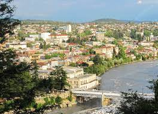
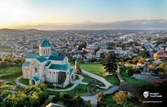
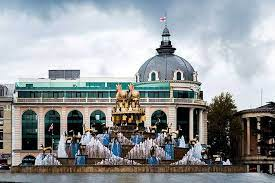
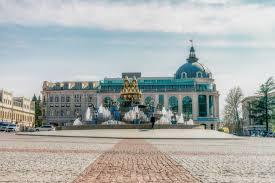
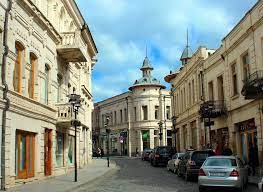

ქუთაისი
ქუთაისი — ქალაქი და მუნიციპალიტეტი საქართველოში, იმერეთის მხარის ადმინისტრაციული ცენტრი, სიდიდით მესამე ქალაქი საქართველოში, საქართველოს სამეფოს ისტორიული დედაქალაქი, ქუთაისის საეპისკოპოსოს ისტორიული ცენტრი. მდებარეობს მდინარე რიონზე. მოსახლეობა 147 635 ადამიანი (2014). ქუთაისის დოკუმენტური ისტორია იწყება ძვ. წ. III საუკუნიდან, თუმცა ანტიკური ავტორები მას თვლიან ძველი კოლხეთის სამეფოს (ძვ. წ. VIII ს.) დედაქალაქად. ქუთაისის ძველი სახელებია: აია, ქუთაია, ქუთათისიუმი. ქუთაისი საუკუნეების განმავლობაში, VIII-დან XIX საუკუნემდე, დასავლეთქართული სახელმწიფოს (მოგვიანებით იმერეთის სამეფოს) ცენტრი იყო. ბიზანტიელი ისტორიკოსი პროკოპი კესარიელის (VI ს.) ცნობით: ვიკიციტატა „მოხირისის მხარეს ჩამოუდის ერთი მდინარე, სახელად რეონი; მის სანაპიროებთან ძველადვე კოლხებს აუგიათ ციხე... მაშინ ამ ციხეს კოტაიონს უწოდებდნენ ელინურ ენით, ამჟამად კი მას ლაზები ქუთათისს ეძახიან... სხვები კი ამბობენ, ძველ დროში ამ ადგილას ქალაქი იყო და კვიტაიონი ეწოდებოდაო; აქაური იყო აიეტი, რის გამოც პოეტები მას კვიტაიელს ეძახდნენ, კოლხიდის ქვეყანას კი კვიტატიდსო“ შუა საუკუნეებში ქუთაისის სახელი უკავშირდებოდა დავით აღმაშენებლის მოღვაწეობას, ახალ ეპოქაში — აკაკი წერეთლის, ზაქარია ფალიაშვილის, კოტე მარჯანიშვილის საქმიანობას. ქუთაისის და მისი შემოგარენის მთავარი ღირსშესანიშნაობანია: ბაგრატის ტაძრის ნანგრევები (XI ს.), გელათის მონასტერი (XII ს.), გეგუთის სასახლე (XII ს.), სათაფლიის მღვიმური ნაკრძალი, ბალნეოლოგიური კურორტი წყალტუბო. ქუთაისში არის ქუთაის-გაენათის ეპარქიის კათედრა და რეზიდენცია.
    